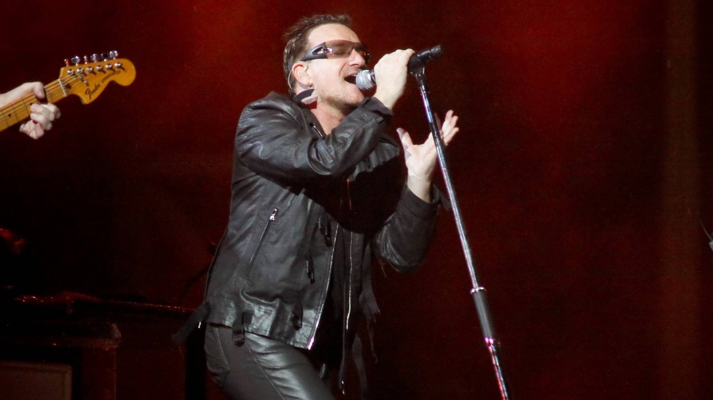

5 Bands That Made The Greatest Comebacks In Rock History
{kind=link}

Music fans know that all-too-familiar pain that comes with their favorite band losing their mojo. Once responsible for your favorite album of all time, they’ve lost that creative spark and are now just going through the motions. It's heartbreaking to witness what a shadow of their former selves they've become, a cringe-worthy caricature of the band they once were.
Often, once a band loses its credibility and falls out of favor, there is no going back. Precious few acts can turn it around with a legit reinvention that overhauls their sound and reignites their career. However, occasionally a band does find that creative second wind. Once forgotten and dismissed, credibility is restored, and everything old is new again.
A true creative reinvention is rare enough to be worth celebrating. Let’s take a look at a few of the bands that pulled off the impossible.
U2 - Achtung Baby
Arguably, the all-time example of a reinvention that led to creative reinvigoration for years to come. U2 might have released an all-time bestseller with Joshua Tree in 1987, though by the time they finished touring its follow-up, Rattle And Hum, they’d somehow squandered all of their goodwill with fans. The perception was that U2 was bloated, pompous, and desperately uncool.
Bono announced during their closing show that "we have to go away and... dream it all up again." The band returned in 1991 with Achtung Baby, and utterly reinvented themselves with a high-tech modern sound that drew influences from alternative rock, industrial, and even blossoming club culture with which U2 remained aligned for the remainder of the ‘90s.
The earnestness that defined Joshua Tree was rigorously swapped for aloof irony, and for a while there, U2 were legitimately cool and perfectly at ease taking creative risks (witness their Passengers ambient side project with Brian Eno in 1995). They might have retreated to artistic safety in 2001 with All That You Can't Leave Behind, and never really returned, but that’s another story.
Green Day - American Idiot
Another second-act career move that saw a band critically reassessed. Green Day shot to pop-punk superstardom with Dookie in 1994, though by the time of the tepidly received Warning in 2000, the band's popularity had begun to wane. American Idiot, in 2004, was treated like a revelation by critics, a rare example of a successful concept album that hit the zeitgeist perfectly.
No one would have expected Green Day to deliver a rock opera in the key of The Who’s Tommy, complete with its own narrative arc that chronicled the adventures of Jesus of Suburbia, a disillusioned everyman, as he navigated the pitfalls of a post-9/11 America.
Billie Joe Armstrong and his bandmates channeled their frustration during the Bush era into a politically-charged opus that expanded their three-chord pop punk sound into a more evolved and ambitious rock form. The album even inspired a successful Broadway spinoff in 2010, but more importantly, it showed Green Day still had plenty left in the tank.
Bee Gees - Saturday Night Fever
Many will exclusively know the Bee Gees for their disco-fantastic era that kicked off with Stayin’ Alive, but their impressive career predates it all the way back to the late ‘50s. The trio rose to immense success with their harmony-driven soft-rock sound that tipped its hat to Lennon and McCartney, witnessed on timeless hits like "I've Gotta Get a Message to You."
By the early 1970s, though, the Bee Gees found themselves out of time as the world shifted to a harder rock sound. But this all changed when they hard-pivoted towards disco in the mid-'70s, most notably their contribution to the Saturday Night Fever soundtrack that was arguably instrumental in boosting disco from an underground subculture into a global phenomenon.
Once known for the introspective harmony of hits like “I Started A Joke,” it was a new era for the Bee Gees that saw the trio situated on the dancefloor under the light of the mirrorball.
Johnny Cash - American IV: The Man Comes Around
The one known as the “Man In Black” truly secured his legacy when he executed a stylistic pivot in the final years before his death. Johnny Cash released a stunning 81 albums over the decades, though by the ‘80s he was viewed as a Nashville relic who’d been dropped by the labels. However, his American Recordings series put him on the path to reinvention.
The album anthology saw Cash collaborate with producer extraordinaire Rick Rubin, who believed Cash to be unfairly written off by the music industry. The series stripped back the country music trimmings for a stripped-back sound that put the focus on his wearied vocals, and it peaked in 2004 with the critically acclaimed American IV: The Man Comes Around.
Cash’s introspective transformation of tracks like Nine Inch Nails’ “Hurt” saw his own career equally transformed. It’s a haunting rendition that repositioned Cash as a timeless interpreter who built a bridge that united audiences across country, rock, and alternative. It was a bittersweet triumph, as Cash passed away only a year after the album’s release.
Radiohead - OK Computer
Before I thoroughly wreck my own credibility as a music writer, it must be clarified from the outset that Radiohead represent a reinvention exception, as they never fell out of favor with their fans, ever. Quite the contrary, as the elevated rock heard on The Bends in 1995 was widely embraced, already demonstrating their talent for evolving their sound.
OK Computer, though, earns Radiohead an honorary award for radical rock reinventions. The 1997 album represents a dramatic break from traditional rock, a radical shift in ambition and thematic depth that added up to a profound reinvention. Blending prog-rock song structures with textured electronics and ambient soundscapes, vocalist Thom Yorke tackled themes of alienation that resonated deeply.
It also set the stage for the band’s later embrace of an even more avant-garde sound, with Kid A in particular representing another stunning reinvention.